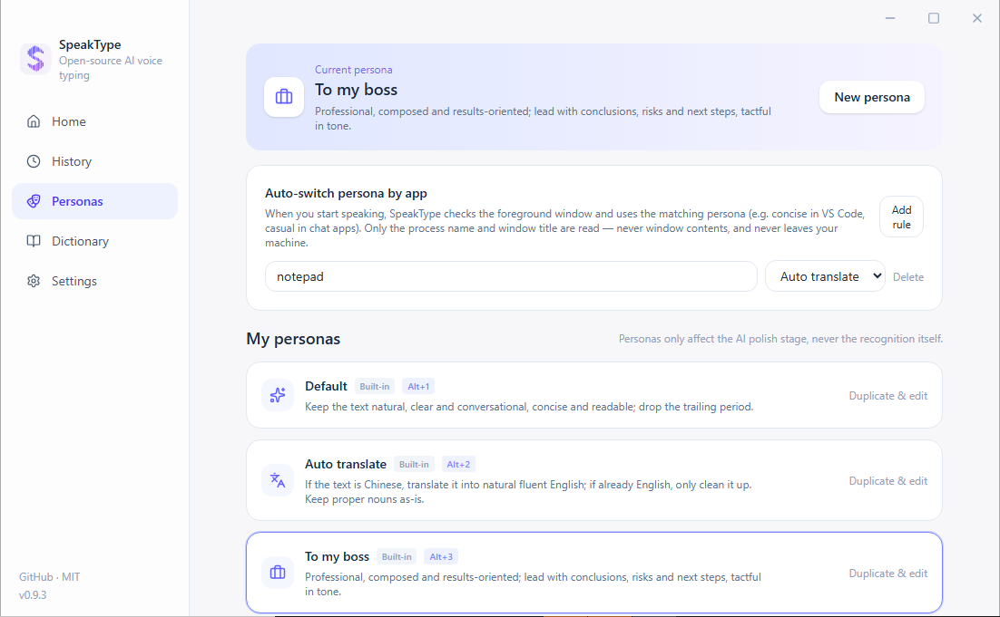

SpeakType
你说，它写 —— 开源 AI 语音输入法
按住 RightCtrl 说话，松手，文字落到任何程序的光标处。识别引擎、AI 润色、热词纠错全部由你定义，密钥与语音永不离开你的掌控。
Windows 10/11 x64 · MIT 开源 · macOS 版开发中

你说，它写 —— 开源 AI 语音输入法
按住 RightCtrl 说话，松手，文字落到任何程序的光标处。识别引擎、AI 润色、热词纠错全部由你定义，密钥与语音永不离开你的掌控。
Windows 10/11 x64 · MIT 开源 · macOS 版开发中
协议、纠错算法、界面，每一行都能看、能改、能自部署。
不架设任何云端服务，语音只发给你自己选择并配置的识别服务——或者干脆完全离线。
识别引擎、AI 润色模型、热词词典、人设风格、快捷键，全部由你定义。
按住 RightCtrl 说话，实时字幕逐字上屏，松手自动落字到任何 Windows 程序的光标处。
Alt+Q 按一下开始、说完自动结束（静音检测），适合长段输入。
Alt+1..9 秒切：默认 / 自动翻译 / 汇报老板 / 命令行 / 自定义 prompt。
词典加上人名、产品名，同音/近音误字自动替换；历史页手动纠错一键学进词典。
可选 Silero VAD 神经网络（约 35MB，本机运行），噪声环境下自动结束与防幻听更准。
识别失败的录音保留在本机，历史页一键重试，不用重说。
台式机没麦克风？手机扫码即用；同一 Wi-Fi 走局域网直连，异地走中转。
选一段文字按住 F8 说「翻译成英文」「改得正式一点」，松手直接替换选区。
落字后你手改对的词自动学进词典，同样的错不会再犯第二次。
复用你自己登录的 doubao.com 会话做流式识别，App Key 自动获取，装完即用。
填 Base URL + Key 即可，内置 Whisper / SiliconFlow / Groq / Fireworks / Mistral / 阿里云百炼预设。
应用内一键下载模型，完全本机识别——不联网、不注册、零密钥；SenseVoice 中文实测每句 0.27 秒、自带标点。

桌面端设置里开「手机当麦克风」，手机扫二维码打开页面，按住圆钮说话，文字落到电脑光标处。零安装，iPhone / Android 通用。
手机页面是可安装 PWA：点「添加到主屏幕」就有图标、全屏、无地址栏；安卓另提供 APK 直装。下次打开自动连回上次配对的电脑。
同一 Wi-Fi 走局域网直连（更快更私密），不在一起时走中转（音频直通不落盘，中转服务开源可自部署）。
